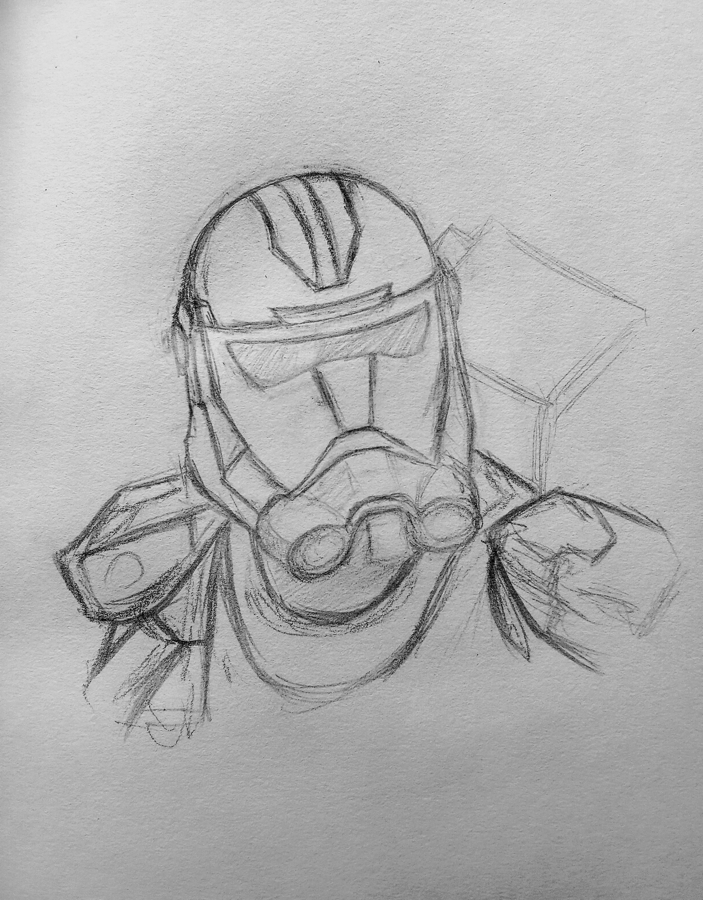
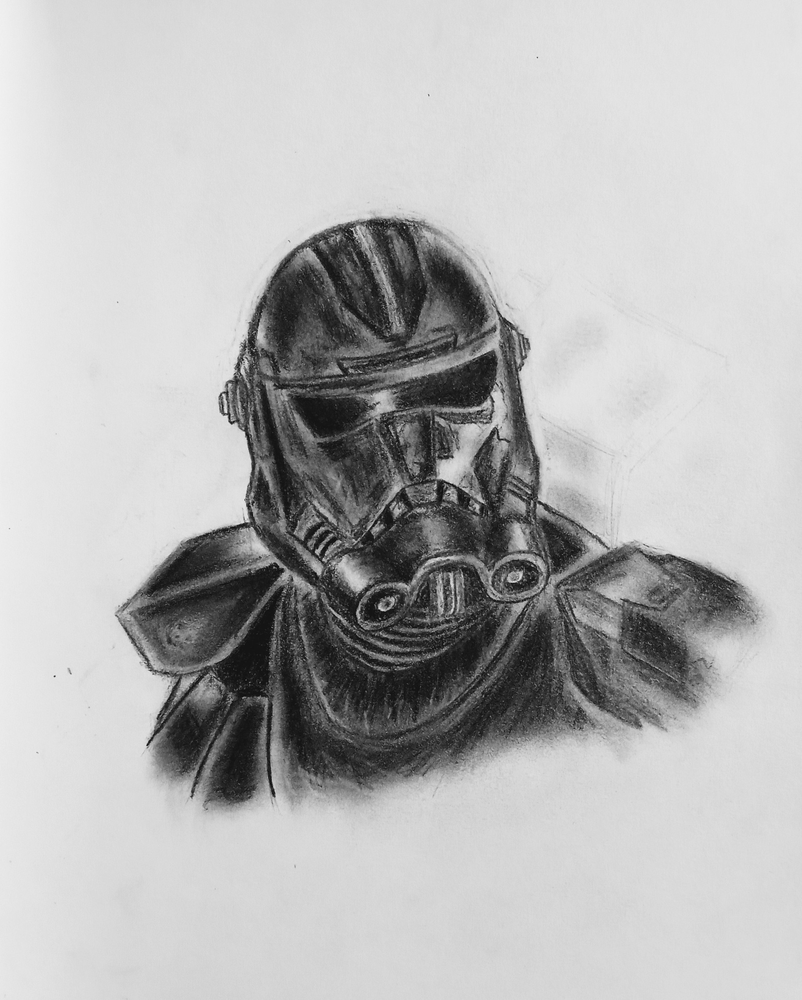
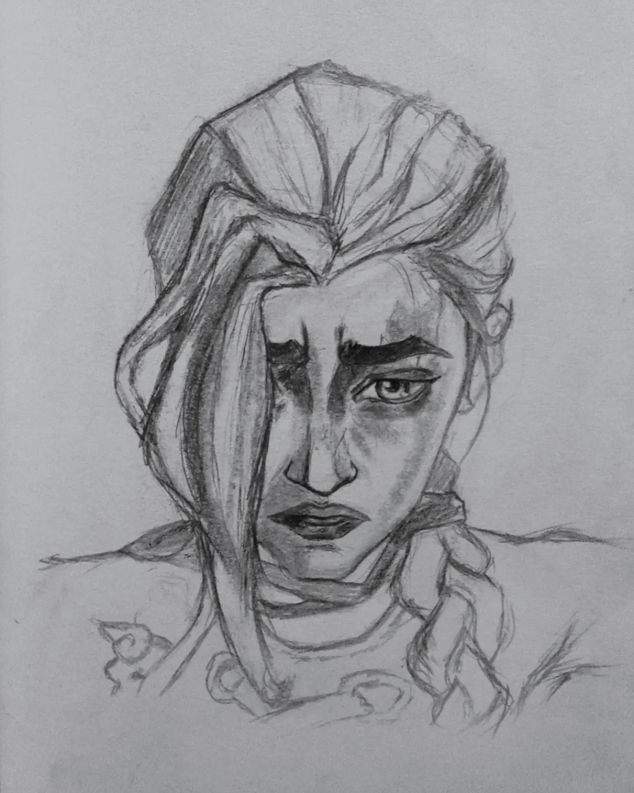

Techniques for Shading and Rendering in Graphite Drawing
Shading and rendering are crucial techniques in graphite drawing that help create depth, dimension, and realism. Here are some effective methods to enhance your shading and rendering skills:
- Hatching and Cross-Hatching: Use parallel lines (hatching) or intersecting lines (cross-hatching) to build up value and texture. Vary the spacing and direction of the lines to create different effects.
- Blending: Use blending tools such as a blending stump, tissue, or your finger to smooth out graphite and create soft transitions between light and dark areas. Be cautious not to over-blend, as it can lead to a loss of texture.
- Layering: Build up layers of graphite gradually to achieve a rich range of values. Start with light pressure and progressively increase it for darker areas. This technique allows for more control over the final appearance.
- Using Erasers: Utilize kneaded erasers or precision erasers to lift graphite and create highlights. This technique is especially useful for adding texture and contrast.
- Understanding Light Source: Identify the direction of the light source in your drawing. This will help you determine where to place highlights and shadows, enhancing the three-dimensionality of your subject.
Rendering Textures
To render different textures effectively, observe the surface qualities of the objects you are drawing. For example, use fine, controlled strokes for smooth surfaces like skin, while employing rougher, more varied strokes for textured surfaces like fabric or wood. Experiment with different pencil grades (e.g., H, HB, B, 2B) to achieve various tonal values and textures.
Here you can see we have the right proportions but its the shading that brings the drawing to life by adding depth and realism.


